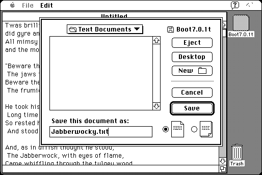

Download
folder-jumper-10.zip (90K) Folder Jumper 1.0 repackaged into a zipped hfs disk image and checksum file. The disk image can be mounted with Mini vMac.
folder-jumper-10.hqx (119K) Folder Jumper 1.0 in the original format.
copyright: Alessandro Levi Montalcini
mod date: Jan 14, 1998
license: Freeware
last known url
(gone)
A “system enhancement that automatically jumps to specified folders as you type a file's name in the ‘Save As...’ dialog box.” Requires System 7.

If you find these downloads useful, please consider helping the Gryphel Project, which hosts them.
Here are the md5 checksums for the downloads, signed with Gryphel Key 5:
--------- GRY SIGNED TEXT --------- da9af23d0e18593fbd4f8f2a440ba577 folder-jumper-10.zip 0d6d9fc05d80d114cbf6856ab4491544 folder-jumper-10.hqx ------- BEGIN GRY SIGNATURE ------- Gry/4Xa8CFcUzxdN/EvM2SfBCRWVGG7uVW8D9SILPnblK07UN1eYXQCJhR4yJImR FbPNxKWlN6jQRlluzYaZETy3JcJEVRusoUQd8iUioJgRc5RDw/aNTRirPRjNZ1Mg hFVKVFoqX2xlb+DmWlPY42+Tp9qYUxIPnFVseQaKa1hKC+n6Kp4kJ7/ls2lfMtbA -------- END GRY SIGNATURE --------